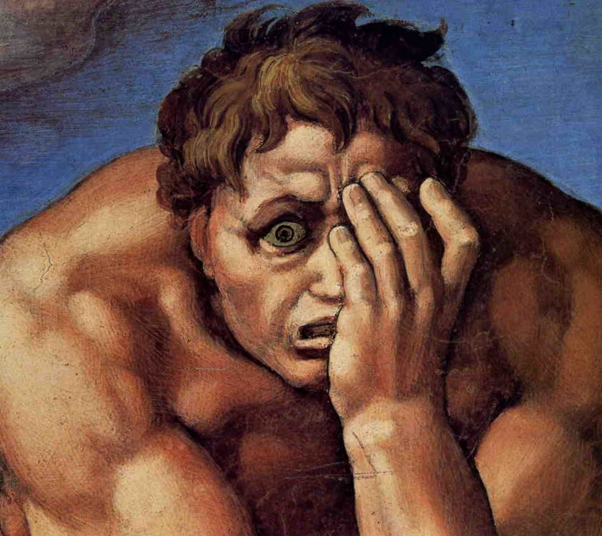
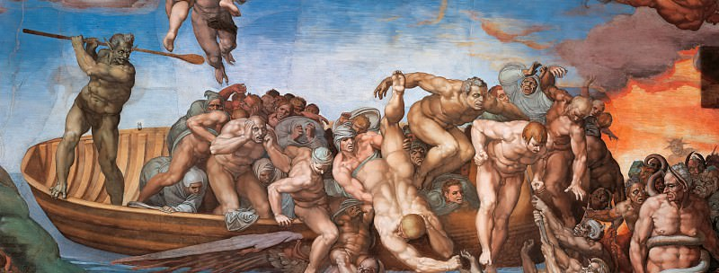

Пишем код для людей
Владимир Захаров
Владимир Захаров
- фронтлид
- 9 лет в индустрии
- react, angular, vue, jq
- фриланс, аутсорс, продукт, платформа
- от человека-оркестра до лида 4х команд

Как на смоам длее наш мзог счытевиат инрфцаомию?
Мы не на диктанте
на лисной апушки р а с п у с к а ю ц а к о л о к о л ч и к и, незабутки, шыповник рамашки пратягивают к сонцу свои лепески Вылитают из уютных гнёзд птинцы. У зверей взраслеет смена М и д в е ж а т а старше всех. Они р а д и л и с ь в берлоги.
export const List = ({ data, onDeleteFile, policies }: Props) => {
const slicedData = useMemo(() => {
return data.slice(0, close ? MIN_FILES_NUMBER : data.length);
}, [close, data]);
const delete = (name: string, uuid: string) => {
const fileslist = files.value as Array<File>;
if (uuid !== INIT_UUID) {
onDeleteFile(uuid);
} else {
setFiles(fileslist.filter((name) => name.replace(/\.[^.$]+$/, "") !== name));
}
};
return (slicedData?.map((el, index) => (
<FileItem data={el} deleteFile={deleteFileHandler} policies={policies}
/>)
};
export const List = ({ data, onDeleteFile, policies }: Props) => {
const slicedData = useMemo(() => {
return data.slice(0, close ? MIN_FILES_NUMBER : data.length);
}, [close, data]);
const delete = (name: string, uuid: string) => {
const fileslist = files.value as Array<File>;
if (uuid !== INIT_UUID) {
onDeleteFile(uuid);
} else {
setFiles(fileslist.filter((name) => name.replace(/\.[^.$]+$/, "") !== name));
}
};
return (slicedData?.map((el, index) => (
<FileItem data={el} deleteFile={deleteFileHandler} policies={policies}
/>)
};
Roadmap
- как мы видим, читаем, пишем код
- удобный, неудобный и сложный код
- шаблоны, привычки, паттерны
- абстракции против костылей
- как стать профессионалом
- ... и как потом с этим жить
Код для компьютера
- умеют писать все
- порог входа в профессию
- javascript прощает всё
- не баг, а фича

Что ты такое?
Качественный продукт
- удовольствие от использования
- рекомендации
- лояльность потребителей
код = параллельный продукт
Качественный код
- удовольствие от использования
- рекомендации
- лояльность потребителей
- хорошая зарплата
- техническое развитие
Писать код для людей
- заботиться о людях
- удобство чтения
- простота мышления
- надёжность изменений
Писать код для людей
- заботиться о людях
- удобство чтения
- простота мышления
надёжность изменений — в другой раз
????? ->
читаем -> пишем
????? -> читаем -> пишем
видим -> читаем -> пишем
«–í–æ—Å–ø—Ä–∏—è—Ç–∏–µ в —à–∞—Ö–º–∞—Ç–∞—Ö»
Герберт Саймон
«–í–æ—Å–ø—Ä–∏—è—Ç–∏–µ в —à–∞—Ö–º–∞—Ç–∞—Ö»
- все испытуемые объединяют фигуры в чанки
- новичок — 10 чанков
- продвинутый — 1000 чанков
- профи — около 50 000 по математической модели
новички и эксперты видят разные доски
Симультанное восприятие
Симультанное восприятие
- правополушарное, творческое
- мышление единицами смысла
- единомоментное восприятие информации
Симультанное восприятие
- «–ø—Ä–æ—Å—Ç–æ вижу / знаю / —á—É–≤—Å—Ç–≤—É—é», интуиция
- развивается через насмотренность
Профессиональное мышление
- методика работает для разных проф. областей
- чанк — «–µ–¥–∏–Ω–∏—Ü–∞ –æ—Ä–≥–∞–Ω–∏–∑–∞—Ü–∏–∏» профессионального опыта
- рост количества чанков = рост экспетизы
for ( let i = 0; i < 10; i++ ) {
//...
}
for ( let i = 0; i < 10; i++ ) {
//...
}
function doSomething {
for ( let i = 0; i < 10; i++ ) {
//...
}
if ( list.length ) {
return "full"
}
return "empty"
}
function doSomething {
for ( let i = 0; i < 10; i++ ) {
//...
}
if ( list.length ) {
return "full"
}
return "empty"
}
Чанки Саймона в разработке
- подсветка синтаксиса
- форматирование
- ключевые слова
- расположение
- узнаваемые характерные блоки = чанки
Мы мешаем симультанному восприятию
Множественный
экспорт
Смешанное
форматирование
Необычная
цветовая
схема
писать код для людей
способствовать симультанному восприятию
видим -> читаем -> пишем
Суксессивное восприятие
- левополушарное, логическое
- медленное и последовательное
- анализ важной или новой информации
Суксессивное восприятие
- неприятно, сложно
- алгоритмическая секция на собеседовании
необходимая и непреднамеренная сложность
function doSomething() {
while {
if (...) {
for (...) {
if (...) {
break;
}
function doSomething() {
while {
if (...) {
for (...) {
if (...) {
break;
}
function doSomething() {
while (...) {
if (...) {
for (...) {
if (...) {
break;
}
цикломатическая
function myMethod(): void {
try {
if (condition1) { // +1
for (int i = 0; i < 10; i++) { // +2
while (condition2) { … } // +3
}
}
} catch (err) { // +1
if (condition2) { … } // +2 (nesting=1)
}
} // Cognitive Complexity = 9
Переусложнённый код
- удержание разветвлённого контекста
- пустые затраты когнитивных ресурсов
- очень медленно
- наращивание костылей
видим -> читаем -> пишем
Как писать код для людей?
считывать, а не вчитываться
Как писать код для людей?
- считывать, а не вчитываться
- логическое мышление как можно позже
- шаблонные задачи — чанки
- невозможность опознать паттерн — if-based-dev

FP
ООП
Rx
SINGLETON
DRY
KISS
GRASP
render props
LOL
KEK
DI
SOLID
Паттерны !== ООП
SOLID !== ООП
- S — функция должна делать что-то одно
- I — количество параметров должно быть ограничено
-
ASEPTIC — Иван Малюгин
Принципы ООП !== ООП
Принципы ООП !== ООП
- полиморфизм — заменяемость и интерфейсы
- инкапсуляция — скрытие внутреннего устройства
- наследование — про отделение общего от частного
Паттерны и шаблонные решения
- распознаются симультанно
- когнитивно дёшевы
- быстро внедряются
- обеспечивают «–º–æ–ª—á–∞–ª–∏–≤—É—é» коммуникацию

Внедрять паттерн
или ставить костыль?
Паттерны против ad hoc
- код для людей — для каких людей?
- уровень абстрактности — компромисс с командой
- зоопарк паттернов — всегда плохо
- паттерн решает задачу, а не порождает
Prettier
- üëç
- единое форматирование
- работает из коробки
- üëé
- не очень гибкий
- конфликтует в ESLint
SonarQube
- üëç
- облачный
- подключаемый
- подробный
- üëé
- платный
- инфраструктурный
ESLint
- üëç
- форматтер
- оценка сложности
- кастомные правила
- üëé
- сложный
- медленный
Рекомендации
- насмотренность
- изучение исходников
- рефакторинг refactoring.guru
Лирическая минутка
- программист учится всю жизнь
- количество опознаваемых чанков, шаблонов
- мозг эксперта распознаёт огромное количество образов
- эксперт действует интуитивно, на чутье, как чувствует
программирование
Голосуйте за мой доклад
Владимир Захаров
@vzkhrv